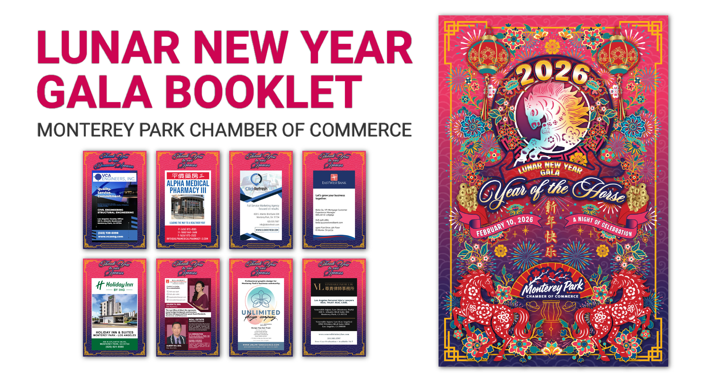
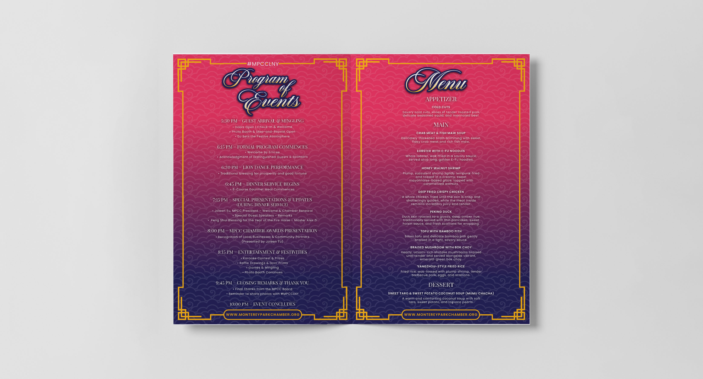
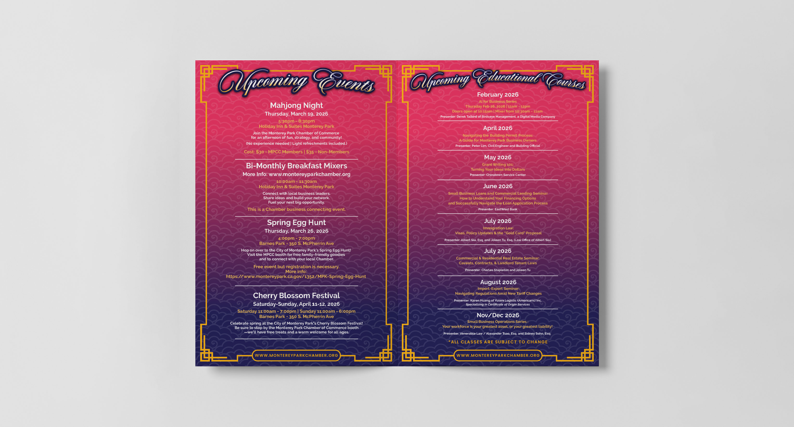
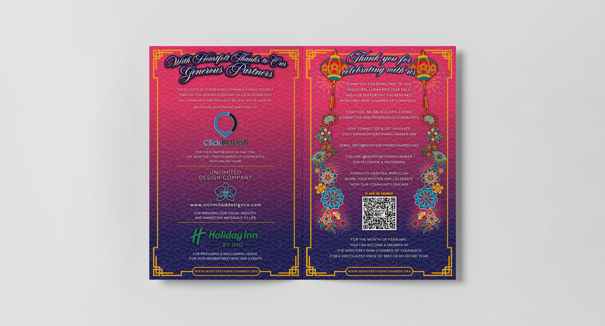

Editorial Design
Lunar New Year Booklet
A community booklet for Lunar New Year celebrations in Monterey Park—layout, illustration, and cover-to-cover design that reads like a keepsake, not a flyer. Built for families, local businesses, and the Chamber’s annual programming.

Cover & Welcome
The cover celebrates the Year of the Horse with layered lanterns, florals, gold fretwork, and rearing horses framing the Chamber’s inaugural gala date. Inside, a presidential welcome sets the tone for the evening—formal enough for sponsors, warm enough for families.
The facing spread introduces the new officer and board roster with consistent portraiture and hierarchy, so members can put names to faces before the program begins.

Program & Menu
Guests need two things at their seat: what happens when, and what they’re eating. The program spread walks through arrival, the lion dance, dinner service, awards, and closing—timed so staff and emcees can run the room without a separate script.
The menu page mirrors the gala invitation typography and lists the full NBC Seafood banquet course by course, from cold cuts through dessert.

Community Calendar
The booklet doubles as a year-ahead guide—not just a single-night program. One spread catalogs upcoming Chamber events from mahjong nights and breakfast mixers to the cherry blossom festival; the other lays out the 2026 educational workshop series, from AI for business to grant writing and immigration law.
Attendees leave with a reason to stay engaged long after the gala ends.

Partners & Closing
Sponsor recognition pages thank diamond partners with room for logos, contact details, and a short note on what each business contributed—from venue hosting to website development and design support.
The closing spread thanks guests for celebrating, points them to social channels and #MPCCLNY, and closes with a membership QR code and February enrollment offer—turning a beautiful printed piece into a conversion path.
